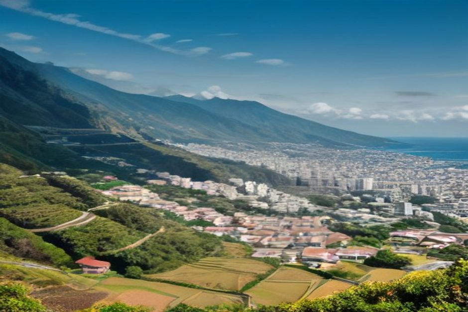

Si busca «Madeira con niños», probablemente ya ha visto fotos de levadas, acantilados y senderistas con botas. Tranquilo: viajar a Madeira con niños, incluso de 3 años, es más fácil de lo que parece. Aquí le contamos dónde alojarse, qué planes funcionan de verdad y cuáles conviene dejar para otro viaje.
¿Es Madeira buena para viajar con niños pequeños?
Sí, y por una razón muy práctica: aquí nada queda lejos. Funchal, el aeropuerto y la mayoría de los complejos de la costa sur están a unos 40 minutos en coche como máximo. Con un niño de 3 años que se duerme en el coche, eso se agradece.
Además está dentro de la Unión Europea, se paga en euros y el clima es suave casi todo el año. La isla no tiene apenas playas de arena natural, así que el baño suele ser en piscinas de agua de mar, poco profundas y vigiladas. Para los más pequeños es, de hecho, más cómodo que una playa con olas.

¿Dónde alojarse en Madeira para unas vacaciones en familia?
La opción más cómoda es Funchal. Desde allí tiene a un trayecto corto en taxi el aeropuerto, la marina, los restaurantes y las piscinas del Lido, de modo que no depende de un coche de alquiler todos los días. Si viaja con carrito o con un bebé, esa libertad pesa mucho.
Si prefiere un ambiente más tranquilo, de estilo resort, mucha gente se desplaza un poco hacia el oeste, a Câmara de Lobos o Ponta do Sol. Siguen estando lo bastante cerca de Funchal para hacer una excursión de un día en cualquier dirección.
Un consejo para julio y agosto: reserve con unas semanas de antelación todo lo que exija un grupo de tamaño fijo, como un paseo privado en barco. En verano la demanda sube, también por los propios visitantes de Madeira.
Qué hacer con niños en Madeira sin hacer senderismo
Los planes que mejor funcionan con niños no implican caminar horas. Estos son los que más se recuerdan:
- Teleférico de Monte. Sube desde Funchal y ya es una atracción en sí misma.
- Carros de cesto. Son trineos de mimbre que dos hombres con sombrero de paja guían calle abajo, bajo Monte. Para la mayoría de los niños, es lo más memorable de la isla.
- Museo CR7, en Funchal, si hay un pequeño aficionado al fútbol en casa.
- Museu da Baleia, en Machico, para niños curiosos por la vida marina.
- Parque de Santa Catarina, en Funchal, con parque infantil y un estanque de patos para una tarde más lenta.
Y si los niños ya son algo mayores, un paseo en barco recorre más costa que casi cualquier plan en tierra, y no hay que caminar nada.
¿Y las levadas? No son obligatorias
Muchos de los paseos más famosos junto a las levadas tienen túneles, desniveles y recorridos de varias horas. No son lo más adecuado para niños pequeños, y nadie le va a pedir que los haga. La isla ofrece muchas alternativas llanas y cortas, como las anteriores, que no exigen caminar. Si quiere probar una levada, elija un tramo corto y evite los bordes de los acantilados.
Piscinas y baño: qué elegir con niños
El baño más tranquilo está en piscinas cerradas alimentadas por el mar, más que en playas abiertas.
- Lido, en Funchal. Es la opción más cómoda: está cerca de la mayoría de los hoteles y tiene socorristas y zonas poco profundas.
- Porto Moniz. Sus piscinas naturales volcánicas son las más famosas, pero pueden agitarse con la marejada. Convienen más a nadadores seguros que a niños muy pequeños.
- Calheta. Tiene la única playa de arena importada de la isla, con una pendiente suave. Por eso gusta tanto a las familias.
- Fajã dos Padres. Solo se llega bien en barco, y su cala resguardada tiene agua plana y sin corrientes, más fácil de gestionar con niños que una playa abierta.
Un paseo en barco privado con niños pequeños
Un barco privado se adapta a una familia mucho mejor que una excursión compartida. En una salida compartida, usted depende del horario de otros y comparte cubierta con desconocidos. En uno privado, el barco es solo suyo: puede acortar una parada si el pequeño ya ha tenido bastante, mantenerle el chaleco salvavidas puesto todo el rato y saltarse lo que no encaje con el grupo.
Chifbay sale de la Marina do Funchal, pantalán C, con un solo grupo por barco (hasta 5 personas) y dos patrones con licencia, de Madeira. Estas son las dos salidas:
- Salida de día. Sale a las 10:00 o a las 14:00. Son 2 h 30 hasta Ribeira Brava por 500 EUR, o 3 h hasta Ponta do Sol por 600 EUR. Pasa por Câmara de Lobos y Cabo Girão, y hay baño y tablas de paddle en Fajã dos Padres. Es la que más gusta a los niños, porque incluye el chapuzón.
- Salida al atardecer. Sale 1 h 15 antes de la puesta de sol, todo el año. Son 2 h hasta Cabo Girão por 400 EUR, o 2 h 30 hasta Ribeira Brava por 500 EUR. No hay parada para bañarse, así que encaja mejor con niños mayores que con un pequeño que viene a chapotear.
El precio es por el barco entero, no por persona. A bordo hay comida y bebida, y el grupo recibe un vídeo en 360° grabado con Insta360, imágenes de dron (si el tiempo lo permite) y fotos hechas con cámara de verdad. La cancelación es gratuita hasta 24 horas antes de la salida, algo útil cuando se viaja con niños y los planes cambian. Si tiene dudas sobre el chaleco de su hijo o sobre la edad, escríbanos antes de reservar. Encontrará más detalles en la información práctica y en el resto de experiencias.
Cuándo ir a Madeira con niños
De finales de primavera a principios de otoño, es decir, de mayo a octubre, tiene el mar más cálido y el tiempo seco más fiable en la costa sur. Para una familia que quiere baño, eso importa más que para quien persigue cascadas. Aun así, la isla tiene un clima suave durante todo el año, y fuera de esos meses los planes de tierra funcionan igual.
Qué llevar en la maleta
Piense en capas. Una mañana cálida en Funchal puede volverse fresca y húmeda una hora después, ya en altura, así que una chaqueta ligera para cada niño merece sitio en la maleta, incluso en verano.
Lo demás es sencillo: crema solar respetuosa con los arrecifes, un buen sombrero y calzado de agua. La roca de la mayoría de las piscinas naturales es afilada, y andar descalzo es la causa más habitual de una tarde estropeada.
¿Es segura Madeira para ir con niños?
Sí. Tiene una tasa de criminalidad baja y buena sanidad en Funchal. Los riesgos reales están en los bordes de los acantilados y en los senderos de las levadas, y basta con evitarlos con los más pequeños.
La isla premia a las familias que planean en torno al agua, no en torno a las montañas.
Madeira no es unas vacaciones de playa clásicas, y ahí está su gracia: cambia la arena infinita y los parques acuáticos por piscinas tranquilas, trayectos cortos y una costa que se ve mejor desde un barco. Si incluye unos días lentos y sin senderismo, funciona igual de bien con un niño de 3 años que con uno de 10. Si quiere ver cómo se ve todo desde el agua, eche un vistazo a nuestras excursiones en barco en Madeira.